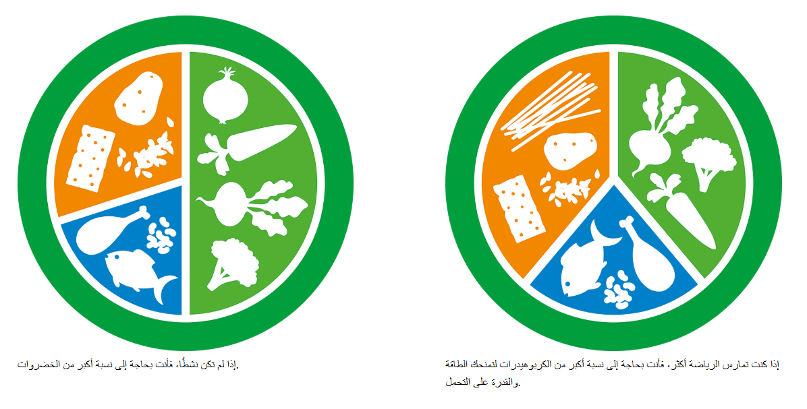

نموذج اللوحة
ينبغي أن يتم توزيع المغذيات المختلفة في النظام الغذائي بناءً على مدى نشاطك البدني. إذا كنت تتبع توصيات هيئة الصحة العامة للأطفال والشباب، وتمارس نشاطًا متوسطًا إلى عالي الشدة لمدة 60 دقيقة يوميًا، فيجب أن يكون التوزيع تقريبًا 40٪ كربوهيدرات، 40٪ خضروات وجذور نباتية، و20٪ بروتين. إذا كنت تتحرك أقل، فعليك تقليل كمية الكربوهيدرات وزيادة نسبة الخضروات والجذور النباتية لتكون حوالي نصف الطبق.
